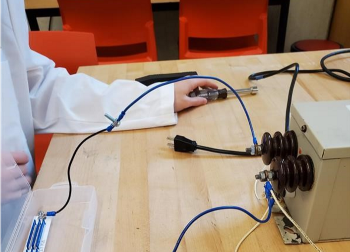

Fusor includes many activities in the realm of science, including software development, engineering, and applying mathematics. Some students write code in Java to communicate with arduinos, creating a real time display of information during experiments. Other students construct shelves and boxes for sensors, and install new equipment onto the fusor. Some students have written (or are writing) research papers about their work. This includes Sydney Vernon, who wrote a paper about paraffin wax, and William and Sophie, who are writing a paper about plasma creation in the chamber.